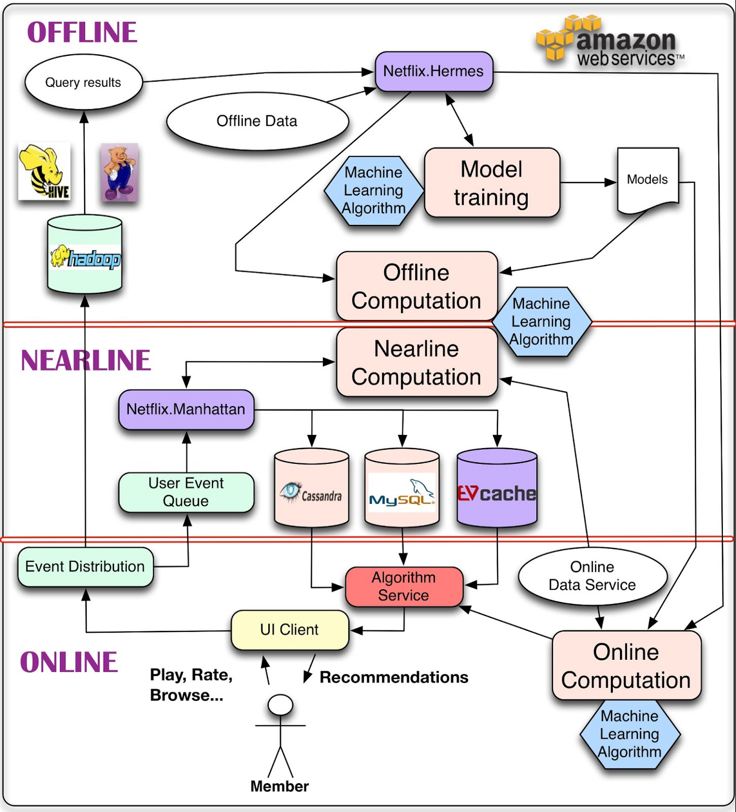

..
推荐系统学习笔记
基本方式
-
基于行为的协同过滤
你选择了A, 跟 A 相似的东西会推荐给你
-
基于内容相似推荐
你选择了A, 跟 A 属于相同类别的东西会推荐给你
解决的问题
- 信息过载。是帮用户从非常多的数据中(比如上千万的商品)选择
- 挖掘长尾。长尾一般是冷门数据，冷门数据的总和往往比热门数据要多，冷门数据也具有非常大的价值
- 用户体验。
环节
问题: 从海量数据中，提取和用户相关的十几条数据，并且在 XXX ms 内返回
graph LR;
input([原始数据
亿/千万]) callback(召回
万/千); sort(排序
千/百); filter(调整
百/十); output([结果
十]) input-->callback-->sort-->filter-->output
亿/千万]) callback(召回
万/千); sort(排序
千/百); filter(调整
百/十); output([结果
十]) input-->callback-->sort-->filter-->output
- 召回解决了信息过载的问题，将数量级极大地降低
- 排序可以使用二分算法, 得出用户是否喜欢(喜欢1 不喜欢为0) 和 喜欢的概率, 这样就能得到权重
如果数量不大, 则可以绕过召回阶段, 直接进行排序
- 调整做到了 去重, 已读过滤/在线过滤, 热门补足, 分页 和 合并内容信息等
召回路劲
名词解释
- u: user, 用户
- i: item
- 2: to, 代表的是边
u2i 代表的是 user to item
graph LR;
user(用户)
item(item);
user-->item
推荐系统解决的是 用户如何找到 item
graph LR;
user(用户)
unkown(...);
item(item);
user-->unkown-->item
这里提出了召回方式
| 路劲 | 解释 | 例子 | 方法 |
|---|---|---|---|
| i2i | 你看了itemA,推荐给你itemB | 头条的相似文章推荐 | item相似度, 协同过滤 和 关联规则(比如人工标注) |
| u2i | 用户的直接行为 | 点击过的内容但是未购买的商品, 很容易产生购买行为 | 用户行为数据 |
| u2i2i | 将 u2i 得到的结果, 推荐给新的用户 | N/A | |
| u2u2i | 用户聚类，获得相似的用户，再根据用户的推荐给当前用户 | 相同年龄/性别的用户, 相同点击行为的用户推荐相似的内容 | 用户聚类, 用户行为，来进行 u2u 部分 |
| u2tag2i | 先算出用户的tag, 在匹配 tag 和 item 的关系 | 豆瓣, B站的 tag, tag效果比较好, 内容不会扩展 | |
| u2***2i | 基于图的算法 |
Netflix推荐架构

- Offline, 计算离线数据, 一般提供 小时/天/月 级别的数据
- 海量数据存储和计算
- 离线计算
- 机器学习和模型训练
- Nearline, 利用离线数据和当前的实时数据, 计算当前的热数据和 TopN 数据等，存储到缓存中
- 接收实时事件
- 计算实时数据并写入缓存
- Online, 直接面向外部提供接口, 一般是直接从 Nearline 的缓存存储中拿到数据返回, 有时延要求
- 分发用户事件
- 组装缓存中的数据
如果是数据不大的话，可以考虑只有两层, Online 和 Offline, Offline 直接将结果写入告诉缓存即可
技术架构
- Offline
- Nearline
- Online
- 存储
- redis
- memcache
- 超时处理, 兜底补足
- 本地LRU缓存
基于内容的推荐(content-based)
给用户推荐 之前喜欢过的物品, 以及相似的物品。 即 u2i2i 和 u2Tag2i, 仅分析单用户本身, 用户和用户之间的行为互不干涉和影响
graph TB
subgraph 用户
action(偏好);
action1(点赞
权重 2); action2(收藏
权重 3); action3(播放
权重 1); aa(偏好向量
故事3 白噪声2 ... ); action --> action1 & action2 & action3-->aa end subgraph 内容 taged(特征
故事/白噪音/仙侠); t1(故事
权重 2); t2(音乐
权重 3); t3(白噪声
权重 1); bb(特征向量
故事3 白噪声4 ... ); taged --> t1 & t2 & t3-->bb end subgraph 推荐 cc(推荐的内容列表
利用余弦相似度算法计算TopN物品) end aa --> cc bb --> cc
权重 2); action2(收藏
权重 3); action3(播放
权重 1); aa(偏好向量
故事3 白噪声2 ... ); action --> action1 & action2 & action3-->aa end subgraph 内容 taged(特征
故事/白噪音/仙侠); t1(故事
权重 2); t2(音乐
权重 3); t3(白噪声
权重 1); bb(特征向量
故事3 白噪声4 ... ); taged --> t1 & t2 & t3-->bb end subgraph 推荐 cc(推荐的内容列表
利用余弦相似度算法计算TopN物品) end aa --> cc bb --> cc
余弦相似度计算, 计算向量和向量之间的距离
优点：
- 只需要单个用户的信息，用户和用户之间没有关联
- 可以推荐最新的或者冷门的物品
- 容易做解释
缺点
- 内容标签需要人工打
- 用户的潜在兴趣无法挖掘
- 全新用户没法推荐(冷启动问题)
落地方案
graph TB
subgraph Offline
storage1(存储1
MySQL); storage2(存储2
ES ?); storage3(存储3
...); cal(计算用户和内容的匹配度
余弦相似度, 皮尔逊相关系数 和 Jaccard); cache(缓存
Redis); end subgraph Nearline EventHandler(事件收集
EventListener 或者 Redis); end subgraph Online event1(用户行为事件
收藏 播放 分享 ...); event2(新内容发布); fetch(获取推荐的内容TopN数据); do(聚合和处理); end event1 & event2-->EventHandler-->storage1 & storage2 & storage3-->cal-->cache-->fetch-->do
MySQL); storage2(存储2
ES ?); storage3(存储3
...); cal(计算用户和内容的匹配度
余弦相似度, 皮尔逊相关系数 和 Jaccard); cache(缓存
Redis); end subgraph Nearline EventHandler(事件收集
EventListener 或者 Redis); end subgraph Online event1(用户行为事件
收藏 播放 分享 ...); event2(新内容发布); fetch(获取推荐的内容TopN数据); do(聚合和处理); end event1 & event2-->EventHandler-->storage1 & storage2 & storage3-->cal-->cache-->fetch-->do
考虑点
- 基于当前的业务量和数据, 尽量使用简单的方式, 不引入新的中间件和非常重的框架(所以这里不会考虑引入 kafka, Spark 等工具)
- 计算路劲足够快和有效, 但是需要有超时设计
- 需要考虑是否应该有数据补足和兜底方案，在新用户进入的时候，提供一批系统预设的数据(解决冷启动问题)
备选方案
- 直接按照需求直接读库实时计算
基于协同的推荐(CF, Collaborative Filtering)
使用行为数据，利用集体智慧，即 用户和用户的行为，物品和物品之间相互交叉和干涉，主要包括 u2u2i 和 u2i2i
-
u2u2i: user1喜欢 x1, user2也喜欢 x1; 那么user1喜欢的 x2 可以推荐给 user2
-
u2i2i: user1喜欢 x1, x1 和 x2 很相似; 那么 可以推荐 x2 给 user1.
下面的例子: 用户A，B，C 已经对部分 item 进行了打分, 现在要给 用户A 的 item 进行排序 和 推荐
| 用户/item的评分 | item1 | item2 | item3 | item4 | item5 | item6 | item7 |
|---|---|---|---|---|---|---|---|
| 用户A | 8分 | 3分 | ? | ? | ? | ? | 2分 |
| 用户B | 7分 | 10分 | 3分 | ? | 8分 | 9分 | ? |
| 用户C | 8分 | 1分 | 8分 | 10分 | 2分 | ? | 8分 |
通过协同过滤的方式如下
graph TB
uu(搜索和用户A和用户B, C的 相似度);
ii(根据相似度, 估算用户A 在新item3和item4的分数);
uu --> ii
相似度计算
- Jaccard相似度
- 余弦相似度
- 皮尔逊相关系数, Pearson’s r